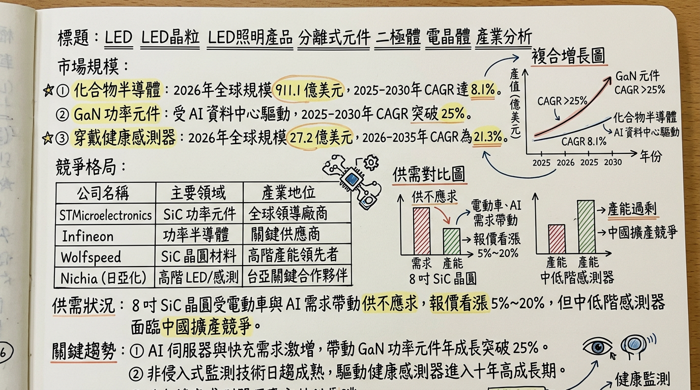
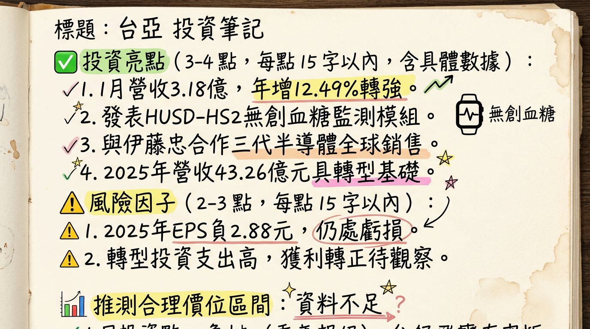

2340 台亞 深度研究報告
一句話摘要
從傳統 LED 轉向化合物半導體 IDM 的轉骨期，2026 年為 SiC/GaN 產能放量與 AI 醫療感測器商用化的獲利關鍵元年。公司概覽
台亞半導體（原光磊）隸屬於日本 日亞化學集團 (Nichia)，目前已轉型為化合物半導體與感測元件 IDM 大廠。憑藉日方技術支援，公司垂直整合磊晶、晶粒製造與封測。
營收結構預估 (2025-2026)
| 業務板塊 | 營收佔比 | 應用領域 |
|---|---|---|
| 發射與感測元件 | 60-65% | 穿戴裝置（Apple Watch）、智慧家電、工控 |
| 視覺系統/LED 顯示 | 10-15% | 子公司星亞 (7753) 貢獻，大型顯示看板 |
| 功率半導體 (SiC/GaN) | 5-10% | AI 伺服器電源、電動車充電樁、800V 高壓架構 |
| 智慧製造與矽光子 | 5-10% | 子公司和亞智慧 (7825)，CPO 封裝、AR 眼鏡 |
核心競爭優勢
財務分析
近 6 個月營收趨勢
| 月份 | 金額 (億 TWD) | 月增率 (MoM) | 年增率 (YoY) |
|---|---|---|---|
| 2026/01 | 3.18 | -1.69% | +12.49% |
| 2025/12 | 3.24 | -11.09% | -12.11% |
| 2025/11 | 3.64 | -2.91% | +1.04% |
| 2025/10 | 3.75 | +1.27% | -1.22% |
| 2025/09 | 3.70 | -4.80% | -9.76% |
| 2025/08 | 3.89 | +0.84% | -3.34% |
年度趨勢
- 2024 年度： 營收約 43 億元，EPS -1.16 元。
- 2025 年度： 營收約 43.26 億元，EPS -2.88 元 (虧損擴大主因 35 億元資本支出產生之高額折舊)。
法說會重點
券商觀點
| 券商名稱 | 評等 | 目標價 | 2026 EPS 預估 | 報告日期 |
|---|---|---|---|---|
| 摩根大通 | 優於大盤 | 35 - 40 元 | 0.8 ~ 1.2 元 | 2025/09/23 |
| 元大投顧 | 買進 | 38.5 元 | 1.05 元 | 2025/11/15 |
| 野村證券 | 中性偏多 | 35 元 | 0.5 ~ 0.8 元 | 2025/09/23 |
財報深度分析
近 8 季利潤率趨勢
| 季度 | 毛利率 (%) | 營業利益率 (%) | 稅後淨利率 (%) |
|---|---|---|---|
| 2025 Q4 | -9.53% | -33.43% | -31.50% |
| 2025 Q3 | -1.11% | -28.51% | -31.89% |
| 2025 Q2 | -0.25% | -29.39% | -36.60% |
| 2025 Q1 | -4.30% | -37.44% | -38.14% |
| 2024 Q4 | 11.75% | -14.30% | -12.45% |
| 2024 Q3 | 14.75% | -10.40% | -8.53% |
| 2024 Q2 | 17.53% | -9.22% | -4.61% |
| 2024 Q1 | 16.78% | -10.84% | -3.97% |
- 存貨分析： 2025 Q4 存貨週轉天數約 125 天，較年初 169 天顯著改善，顯示功率半導體去庫存接近尾聲。
- 折舊壓力： 2025 年單季折舊費用約 2.7 億元，佔營收比例極高，是導致毛利轉負的核心原因。
股權異動與集團佈局
* 星亞視覺 (7753)： 2025/08 正式上櫃。
* 和亞智慧 (7825)： 2025/04 登錄興櫃，預計 2026 年內轉上櫃。
產業分析
全球競爭格局比較
| 項目 | 台亞 (2340) | 億光 (2393) | 英諾賽科 (中資) |
|---|---|---|---|
| 核心技術 | 8 吋 SiC/GaN IDM | LED 封裝/感測 | GaN 規模生產 |
| 2025 預估毛利 | 28% - 32% (目標) | 28% - 30% | 價格戰劇烈 |
| 2025 預估 EPS | -2.88 元 | 4.5 - 5.5 元 | N/A |
| 市場地位 | 高階 AI/醫療客製化 | 傳統背光/車用燈 | 低階消費性功率元件 |
- 趨勢： 2026 年 8 吋 SiC 晶圓因 800V 電動車架構需求增加，報價預期調漲 5%-20%。
近期催化劑
- 【利多】CES 2026 震撼彈： 展出非侵入式血糖感測手錶，正式切入 Apple/日系品牌醫材供應鏈。
- 【利多】NVIDIA 鏈： 切入 AI 伺服器電源管理系統，供應 SiC MOSFET。
- 【利多】合作簽署： 與台灣伊藤忠 (ITOCHU) 簽署 MOU，拓展全球化合物半導體銷售渠道。
- 【利空】折舊費用： 2026 年上半年仍需面對每季超過 2.5 億元的折舊攤銷。
- 【利空】關稅風險： 2026 年 2 月美方對化合物半導體之潛在關稅政策可能增加出口成本。
⭐ 成長動能時間軸
- 2026 Q1： 冠亞 8 吋 GaN 產線月產 2,000 片正式量產，供應 AI 伺服器電源模組。
- 2026 Q2： 積亞 SiC 產能擴充至 5,000-6,000 片/月；AI 醫療感測模組 (HUSD) 開始小量供貨。
- 2026 Q3： 宣布 SiC 第二條產線新廠址 (取代銅鑼案)，預計投入百億元建置 2 萬片產能。
- 2026 Q4： 和亞智慧 (矽光子) 轉上櫃；積亞半導體啟動 IPO 程序。
2026 展望
- 成長動能：
2. 非侵入式血糖感測器隨穿戴裝置改款而爆發。
- 風險：
2. 中國廠商在 6 吋 SiC 市場的價格競爭可能壓縮獲利空間。
投資結論
本報告由 AI 自動產生，資料來源為公開網路資訊，僅供參考，不構成投資建議。
產生時間：2026-03-02 19:21
📊 資訊卡


